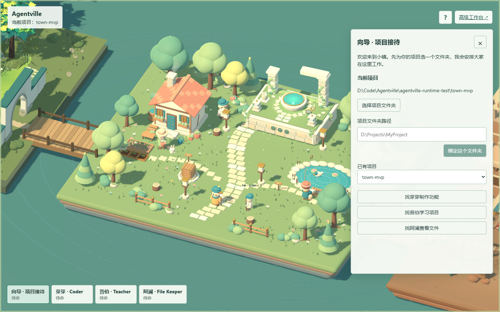
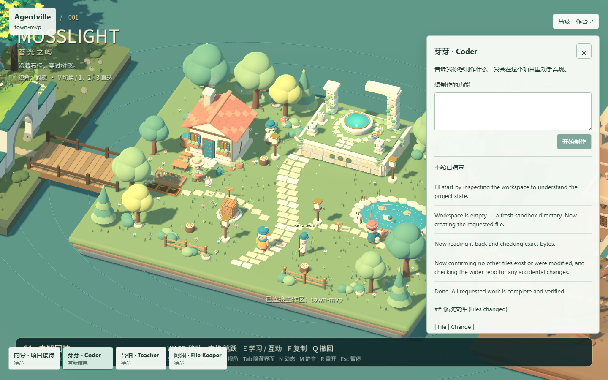
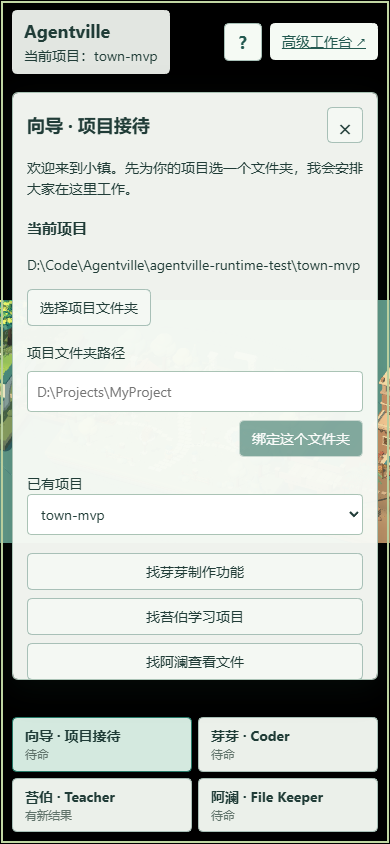

走进小镇
在群岛里找到向导，选择一个已有项目，或为新的想法安顿一个 Workspace。
 agent-isles
开始探索
agent-isles
开始探索
AI coding · mosslight archipelago
agent-isles 把模型、文件、工具和审批变成一片可以走进去的创作世界。和住在项目里的 AI 伙伴一起完成作品，也在过程中学会 Coding。

这里的每一座小岛都连接着你的本地 Workspace。你可以从一句模糊的想法开始，选择合适的居民，看到任务如何被拆解、执行、确认，再亲手检查作品。
世界负责让人愿意走进来，专业工作台负责让每一步都可观察。agent-isles 不隐藏 Agent 的能力，也不替你假装“完成”就是“正确”。
一个清晰的工作闭环，让你始终知道现在发生了什么、接下来该做什么。
在群岛里找到向导，选择一个已有项目，或为新的想法安顿一个 Workspace。
Qiuner 负责制作，苔伯管理项目与历史，阿澜帮你查阅文件。每个入口都有清楚的职责。
提交需求、处理审批、查看工具结果，回到作品里亲手验证，再决定继续修改还是暂时离开。
角色不是装饰，而是你理解项目状态、选择下一步行动的入口。
选择文件夹、绑定 Workspace、带你认识小岛。
读取、修改并验证真实项目，保留完整对话和审批。
管理项目、搜索历史，并继续已有的创作对话。
浏览目录，预览文本，查看 Git 的实际修改。
Godot 呈现世界，React 组织交互，DSH 保留执行事实。三层各自负责，但始终连在一起。


YOUR NEXT ISLAND